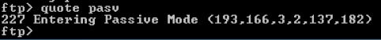
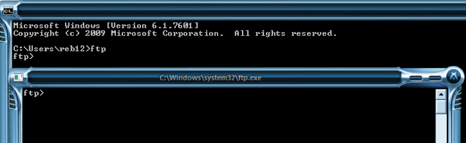
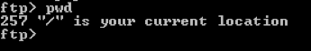
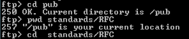

P108 Networking Transfer Protocols <<
Previous Next >> P110 SSL
P109 FTP
In the OSI (Open Systems Interconnection) model, the application layer uses protocols such as trivial file transfer protocol (TFTP), file transfer protocol (FTP), and file transfer protocol secure (FTPS using TLS/SSL) to allow users to migrate data in a client-server model. FTP concerns itself with data only and as such eliminates the overhead of extraneous information such as what HTTP allows in addition to the actual data (advertisements, banners, images, etc.). This alleviates processing and bandwidth overhead and allows the client to simply retrieve the data from the server.
FTP services can be accessed using client software such as ftp.exe (provided in all Microsoft operating systems), third-party software such as Filezilla or WinSCP, and any modern/current browser. Most light-duty users outside a corporate environment will not use a client FTP (or its secure version) because web browsers can negotiate FTP as well as HTTP. Public FTP servers allow for an anonymous user name so the client can reach file directories specifically designed for public access.
These network communications are passed through the presentation layer to the session layer, where sockets and sessions are created using logical port numbers as defined by TCP or UDP. TCP is stateful, connection-oriented and reliable. UDP is stateless, connectionless, and less reliable. The combination of source and destination address coupled with the logical port number creates a network socket, which establishes the session for process-to-process communication. The material in this section is used under CC-BY license fromhttps://en.wikipedia.org/wiki/Transport_layer.
在OSI（開放系統互連）模型中，應用程序層使用諸如簡單文件傳輸協議（TFTP），文件傳輸協議（FTP）和安全文件傳輸協議（使用TLS / SSL的FTPS）之類的協議來允許用戶遷移數據在客戶端-服務器模型中。 FTP僅關注數據本身，因此消除了額外信息的開銷，例如除了實際數據（廣告，橫幅，圖像等）外，HTTP允許的信息。這減輕了處理和帶寬開銷，並使客戶端可以簡單地從服務器檢索數據。
可以使用客戶端軟件（例如ftp.exe（在所有Microsoft操作系統中提供），第三方軟件（例如Filezilla或WinSCP）以及任何現代/最新的瀏覽器）訪問FTP服務。公司環境之外的大多數輕型用戶將不會使用客戶端FTP（或其安全版本），因為Web瀏覽器可以協商FTP以及HTTP。公用FTP服務器允許使用匿名用戶名，以便客戶端可以訪問專門為公用訪問而設計的文件目錄。
這些網絡通信通過表示層傳遞到會話層，在會話層中，使用由TCP或UDP定義的邏輯端口號創建套接字和會話。 TCP是有狀態的，面向連接的且可靠的。 UDP是無狀態，無連接且可靠性較低的。源地址和目標地址以及邏輯端口號的組合創建了一個網絡套接字，該網絡套接字建立了進程間通信的會話。本節中的材料根據CC-BY許可使用https://en.wikipedia.org/wiki/Transport_layer.
Active vs. Passive
Active FTP is a point-to-point connection that the client initiates and connects to the FTP server port 21 for commands and port 20 for data. That means that the server will actively initiate the connections back to the client’s listening port and will require the client to allow these connections, which the firewall blocks by default. Passive FTP allows the client to initiate the data connection on port 21, and then the FTP server moves the command and data connections to random ports on the server (with numbers higher than 1023). By initiating the connection from the client side, the burden of allowing a pass-through on the firewall resides with the FTP server administrator, who is better equipped to set a range of ports allowing connectivity.
活動FTP是客戶端發起的點對點連接，並連接到FTP服務器的21號端口（用於命令）和20號端口（用於數據）。 這意味著服務器將主動發起與客戶端偵聽端口的連接，並要求客戶端允許這些連接，防火牆默認情況下會阻止這些連接。 被動FTP允許客戶端在端口21上啟動數據連接，然後FTP服務器將命令和數據連接移至服務器上的隨機端口（數字大於1023）。 通過從客戶端啟動連接，防火牆上允許通過的負擔就由FTP服務器管理員承擔，後者可以更好地設置允許連接的端口範圍。
For more information on active vs. passive FTP, visit this
website.Using FTP
Accessing FTP public servers using the command line is not nearly as user-friendly as using a web browser. However, both methods are viable and in use in corporate networks.
使用命令行訪問FTP公共服務器並不像使用Web瀏覽器那樣友好。 但是，這兩種方法都是可行的，並已在公司網絡中使用。
- Open a web browser of choice(打開選擇的網絡瀏覽器)
- Use this URL: ftp.funet.fi(使用此URL：ftp.funet.fi)
- Click “pubs,” then “standards,” then “RFC”(點擊“發布”，然後點擊“標準”，然後點擊“ RFC”)
- Search RFC 959 and access either the .txt or .pdf file (left-click)(搜索RFC 959並訪問.txt或.pdf文件（單擊鼠標左鍵）)
- Search RFC 4217 and access either the .txt or .pdf file (left-click)(搜索RFC 4217並訪問.txt或.pdf文件（單擊鼠標左鍵）)
- If you actually needed the file you can right-click and save as.(如果您確實需要該文件，則可以右鍵單擊並另存為。)
Now that you see the file structure, notice it is similar to navigating a local hard drive with the only difference being that you use the “/” (forward slash) instead of the “\” (backslash) because you are accessing the folders through the Internet.
Note: In this next step using the command-line interface, you will only be able to navigate the FTP server, and will not be able to transfer files, because ftp.exe does not support passive mode by default. You can use a command-line tool in a Linux Distro; or, in Windows, you can go to Passive-FTP.com and download the freeware.
However, you can create a workaround by first allowing FTP through your firewall (be sure to put firewall restrictions back in place after the exercise), and then issuing the following commands after you enter the password:
現在您已經看到文件結構，請注意，它類似於瀏覽本地硬盤驅動器，唯一的區別是您使用“ /”（正斜杠）而不是“ \”（反斜杠），因為您通過以下方式訪問文件夾 互聯網。
注意：在接下來的使用命令行界面的步驟中，您將只能瀏覽FTP服務器，並且將無法傳輸文件，因為ftp.exe默認情況下不支持被動模式。 您可以在Linux Distro中使用命令行工具。 或者，在Windows中，您可以轉到Passive-FTP.com並下載免費軟件。
但是，您可以通過以下方法來創建變通辦法：首先允許FTP通過防火牆（請確保在練習後將防火牆限制放回原處），然後在輸入密碼後發出以下命令

- Now the “dir, ls” (list directory contents), and “get” (download) commands will work.
現在，“ dir，ls”（列出目錄內容）和“ get”（下載）命令將起作用。
- By default, the file will download to your user root at C:\Windows\Users\**your user name** or at the root of C:\ (wherever your OS is installed).
默認情況下，該文件將下載到您的用戶根目錄，即C：\ Windows \ Users \ **您的用戶名**或 C：\的根目錄（無論您安裝了OS的位置）。
As a public FTP server set to passive mode, certain commands do not work and invoke the server to close the socket. If that happens, re-do your log on.
Use the keyboard command + r and type ftp (from an administrative command line interface you can also type ftp). The prompt changes to ftp>
將公共FTP服務器設置為被動模式後，某些命令將不起作用，並調用服務器以關閉套接字。 如果發生這種情況，請重新登錄。
使用鍵盤命令+ r並鍵入ftp（在管理命令行界面中，您也可以鍵入ftp）。 提示符更改為ftp>

- Type “help” and look at the commands.(輸入“ help”並查看命令。)
- Type at the command prompt: open ftp.funet.fi.(在命令提示符下鍵入：打開ftp.funet.fi。)
- Follow the prompts to log on.(按照提示進行登錄。)
- Username: anonymous.(用戶名：匿名。)
- Password: any generic e-mail (such as user@user.com).(密碼：任何通用電子郵件（例如user@user.com）。)
You get a welcome message and can now navigate through the directory structure you saw in the browser by typing the following commands:
您會收到一條歡迎消息，現在可以通過鍵入以下命令來瀏覽瀏覽器中看到的目錄結構：
- pwd — lists the current directory.(pwd-列出當前目錄。)

- cd — changes the directory. This may be in the form of:
cd —更改目錄。 可以採用以下形式：
cd pub (refer to the URL path from the previous exercise), or
cd/pub/standards/RFC/
cd pub（請參閱上一練習中的URL路徑），或
cd / pub / standards / RFC /

Now if you are using the workaround, Mac, or Linux you can download a file using the “get” command:
現在，如果您使用的是變通方法，Mac或Linux，則可以使用“ get”命令下載文件：